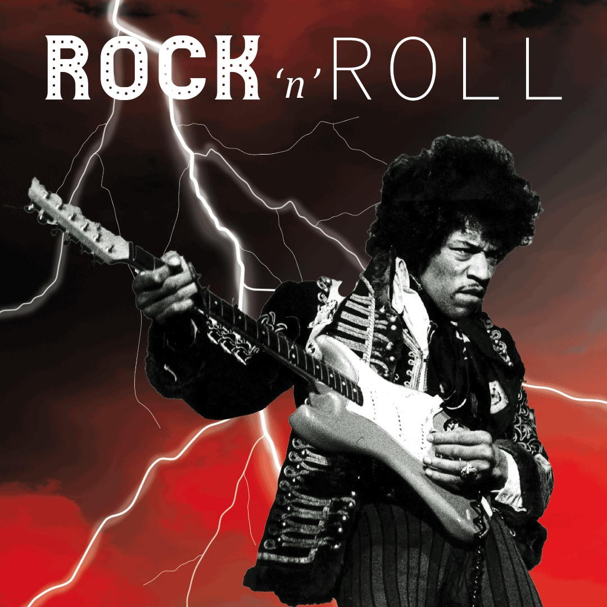

Best Album of All Time Debate
by Noah Petrovski If you have ever hung out with a group of music heads or flipped through classic rock radio, you have probably stumbled into this debate: Whats the best rock album of all time? And let me tell you theres no right answer, but its a fun fight to have. Some people swear by Dark Side of the Moon from Pink Floyd. Its hard to argue against it. The production, the concept, the timeless feel. But then you have got Led Zeppelin IV, which gave us Stairway to Heaven, one of the most iconic rock songs ever written. Then again, if we are talking raw energy and rebellion, Nevermind by Nirvana completely flipped the game and defined an entire generation. Can you even talk rock albums without mentioning Abbey Road or The White Album from The Beatles? Personally I go back and forth. One day its Back in Black, the next day its The Wall. Theres just something about these records that hit different depending on where you are in life. Some are technically perfect, some are emotionally untouchable. Thats the beauty of music. So no, I dont have an answer. And honestly, I hope I never settle on one. The best rock album of all time isnt one album. Its every album that ever made you stop, turn it up, and lose yourself in the sound.
| Album | Artist | Release Year |
|---|---|---|
| Ride the Lightning | Metallica | 1984 |
| Facelift | Alice in Chains | 1990 |
| Nevermind | Nirvana | 1991 |